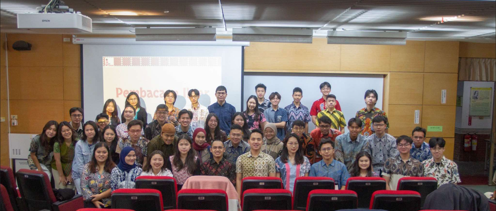

Pada tanggal 3 November 2006, sebuah milis dengan nama “Guyon di Tainan” lahir, menjadi titik awal dari perjalanan yang menarik, saat sekelompok mahasiswa Indonesia yang tersebar di berbagai perguruan tinggi di kota Tainan merasa perlu membentuk wadah yang dapat memberikan dukungan kepada sesama pelajar Indonesia. Setahun kemudian, tepatnya pada 30 Desember 2007, di National Cheng Kung University (NCKU), resmi berdiri PPI Tainan. PPI Tainan ini memiliki ciri khas yang sangat kuat, yaitu kedekatan antara anggotanya dan komitmen untuk mengembangkan intelektualitas guna membentuk masyarakat ilmiah yang bertanggung jawab dalam meningkatkan pengetahuan dan keterampilan seluruh anggotanya, serta mempromosikan budaya Indonesia.
Salah satu tujuan awal didirikannya PPI Tainan adalah memberikan dukungan yang bersifat sosial, akademik, dan kultural kepada pelajar Indonesia di Tainan. Meski penuh dengan tantangan dalam upaya pembentukan organisasi, para pendiri berhasil membangun struktur organisasi yang baik dan mulai menjalankan berbagai program serta kegiatan.
Sejak awal, PPI Tainan telah membuktikan eksistensinya sebagai wadah bagi para pelajar Indonesia yang tinggal di Taiwan, khususnya di kota Tainan. Bahkan PPI Tainan berdiri lebih awal dibandingkan PPI Taiwan, dan sekaligus sebagai salah satu inisiator terbentuknya PPI Taiwan pada tahun 2010. Kedekatan di antara anggota PPI Tainan bukan hanya sekadar hubungan antar-teman, tetapi lebih dari itu, ia menciptakan ikatan kekeluargaan yang kuat di antara mereka. Ikatan inilah yang menjadi pondasi utama dalam membangun organisasi ini.
Yukkk Kenalan dulu Dengan PPI Tainan (•⩊•)
